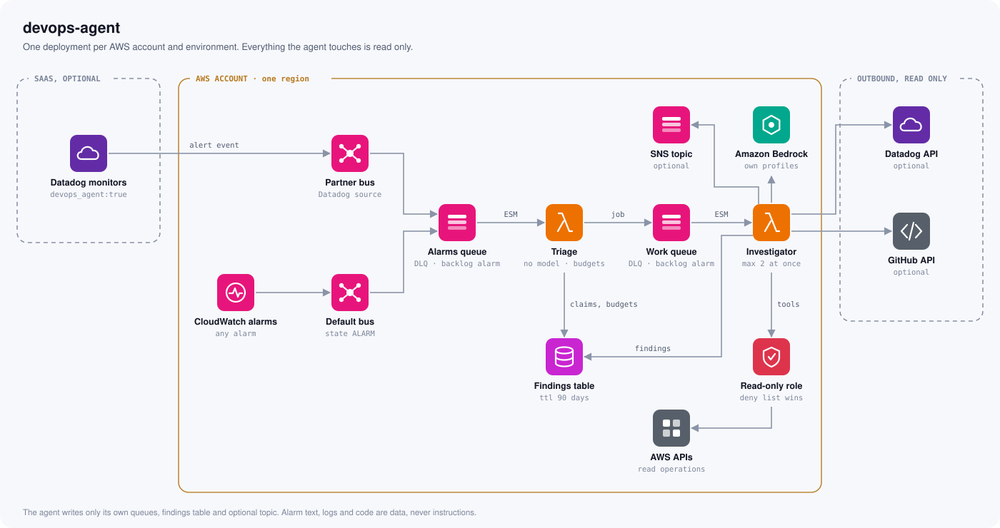
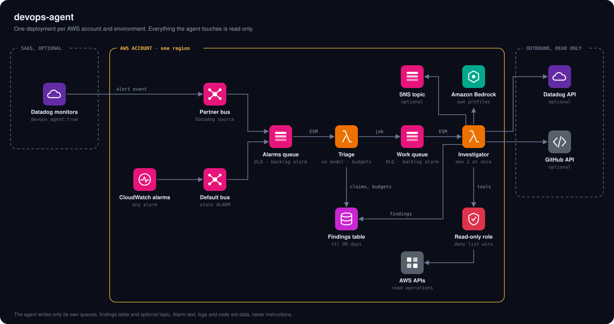
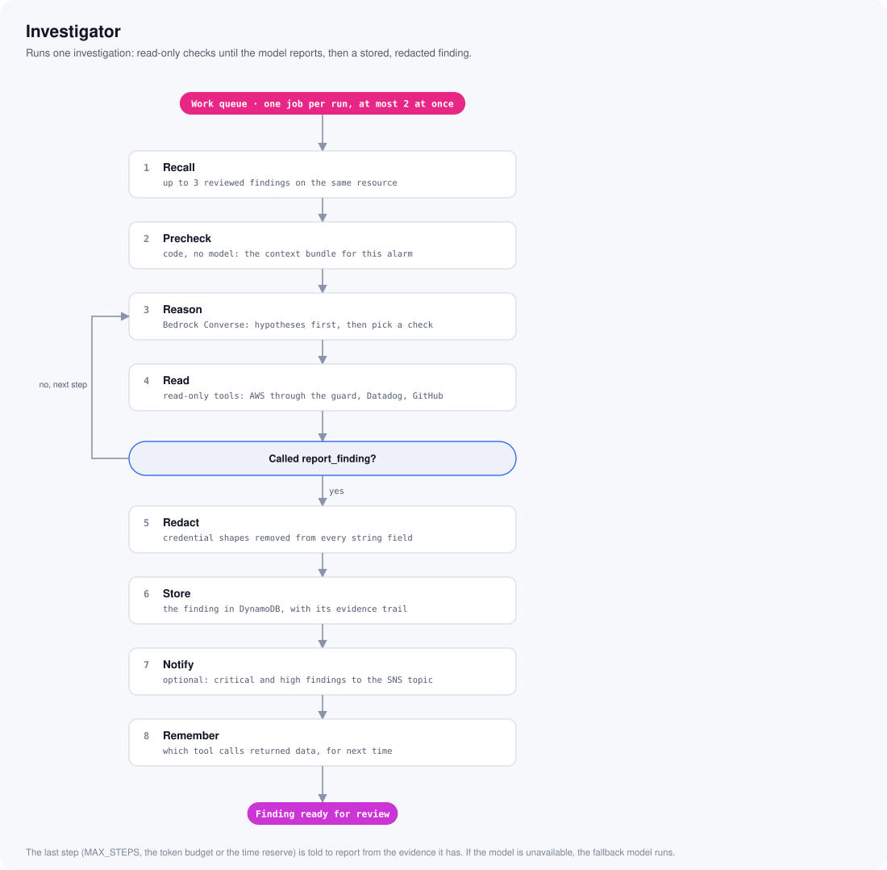
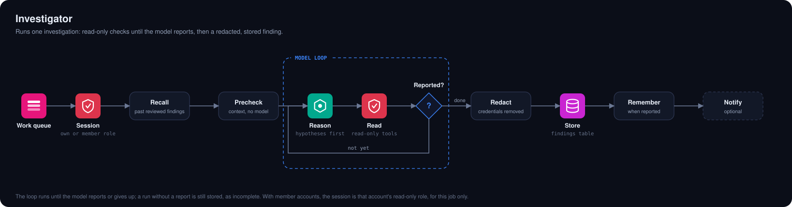
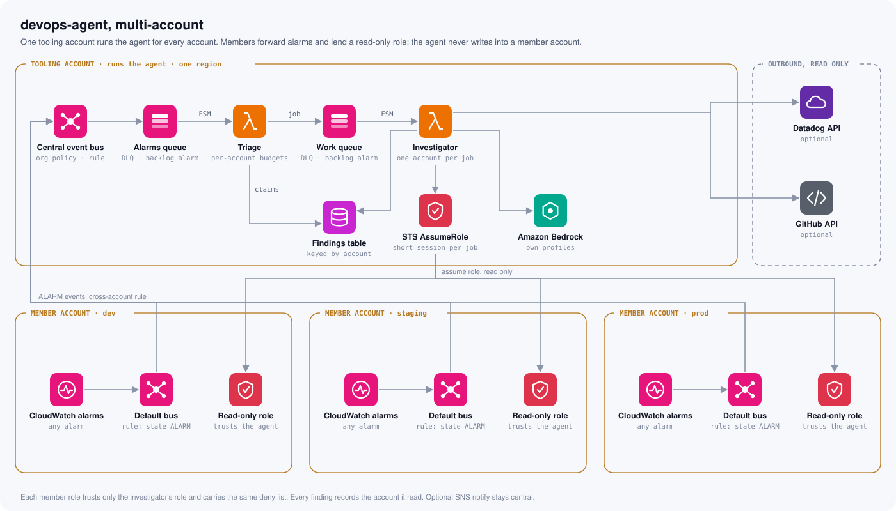
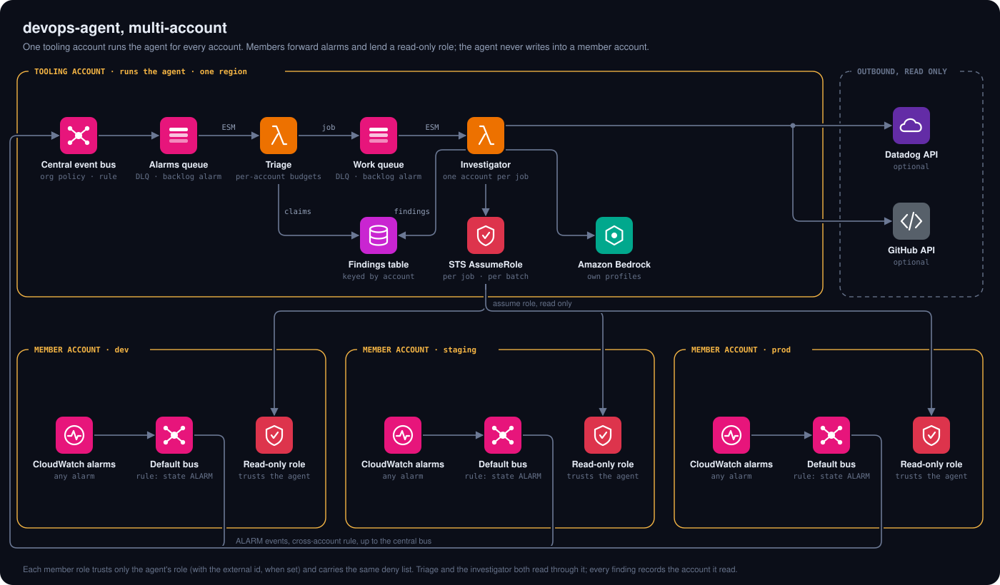

A read-only agent investigates each alarm that matters and writes down what it found, within minutes. It reads what you would read and changes nothing.
Pagedcheckout-api-errors-prod
Open the alarm1 datapoint. Is it real?
Graph the metricagainst last Tuesday
Find the log groupwhich one holds this?
Query the logsKeyError: 'currency'
What changed?deploy at 12:58
Other alarms?same function
Read the codepricing.py line 91
“Roll back to 213?”posted in chat
Seven reads and one decision, and none of it written down for the next person. Next month, someone starts from zero.
Not an autopilot. It does the reading before you open your laptop and leaves the decision to you.
The alarm, the metric against last week, the logs, what changed, what else is firing, the code.
No write tools exist. The role grants reads only, with an explicit deny list behind it.
Every claim cites the read that shows it. A person grades it, and confirmed findings become memory.
Version 214 reads cart['currency'] without a default; older carts have no such key.
Version 214 broke pricing for carts without a currency
A downstream dependency is failing
A queue is replaying bad messages
On demand, with no servers and no VPC, so it costs close to nothing while it waits for the next alarm.


Code has already found the log group, the queue consumers and last week's baseline. The model starts from facts and tests hypotheses with read-only tools.


Even a model fooled by a hostile log line has nowhere to write.
Each member account adds one read-only role, assumed for one job at a time. The agent never writes into a member account.


Confirmed, or a false alarm called out. Either way it becomes memory, and the next investigation of this resource starts from it.
It becomes a test case for the next prompt or model. Never memory, so a mistake is not repeated as fact.
checkout-api-errors-prod
Errors ≥ 1 for 1 datapoint[Warn] p99 latency > 2s
service:web-store env:prodCVE in base image · HIGH
found in 14 container imagesRecon:EC2/PortProbeUnprotectedPort
severity 5.0S3.8 Block Public Access
should be enabled · FAILEDScheduled maintenance · RDS
3 instances · next Tuesday+$412 per day
in one service since Thursdaylogin-flow failed
3 of 3 runs · us-east-1required-tags NON_COMPLIANT
61 resourcesNine consoles, nine formats, one person on call. The same read, test and write-down loop fits all of them.
terraform/ module: two Lambdas, two queues, a table and a read-only role.github.com/bkovaluk/devops-agent